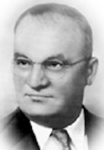

The style of our classic Chili is inspired from Greece. The different kinds of spices that are used in our chili are very different from any other chili recipe that we are familiar with.
The person who founded Skyline Chili was a greek immigrant who moved to Cincinnati, Nicholas Lambrinides.

In 1949, Nicholas and his brothers worked together to create the Skyline Chili that we know today. They got the idea for the name because the first Skyline was set aross the river and they just looked out at the Cincinnati city skyline and came up with the name, Skyline Chili.
Over time, Skyline Chili had become so popular that it expanded all throughout the Cincinnati area and even slightly beyond.